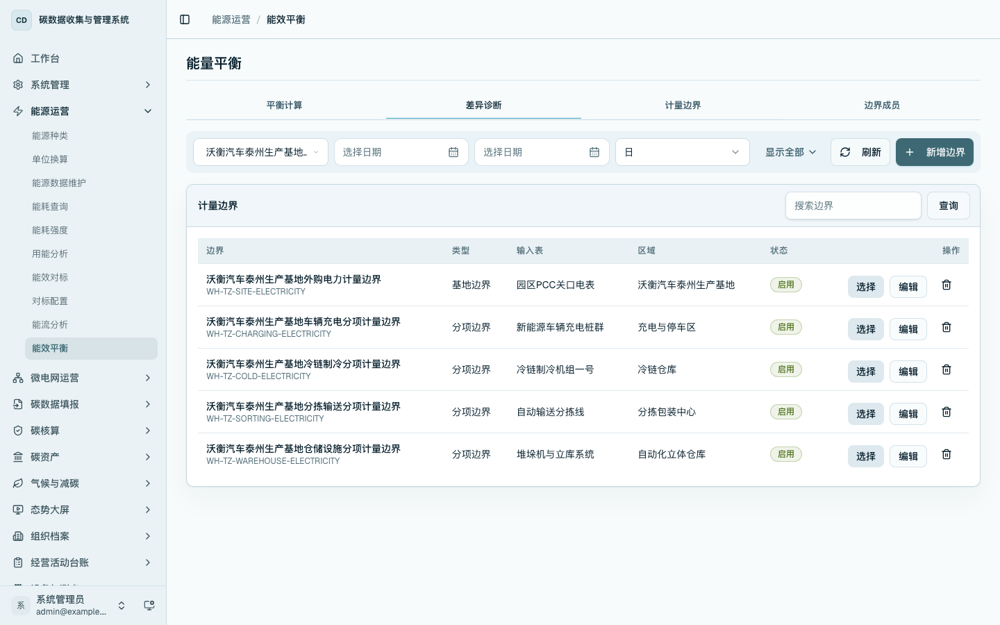
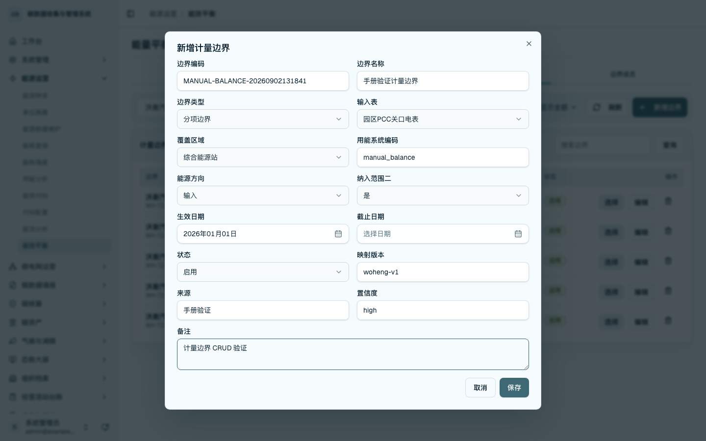
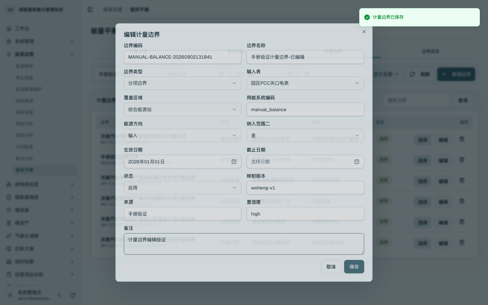
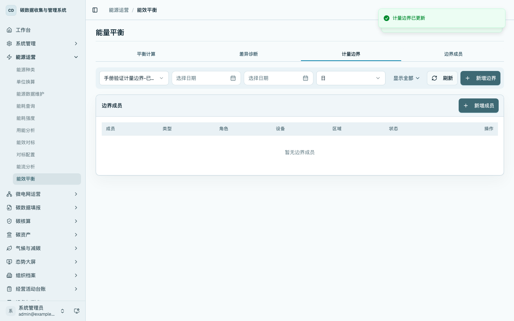
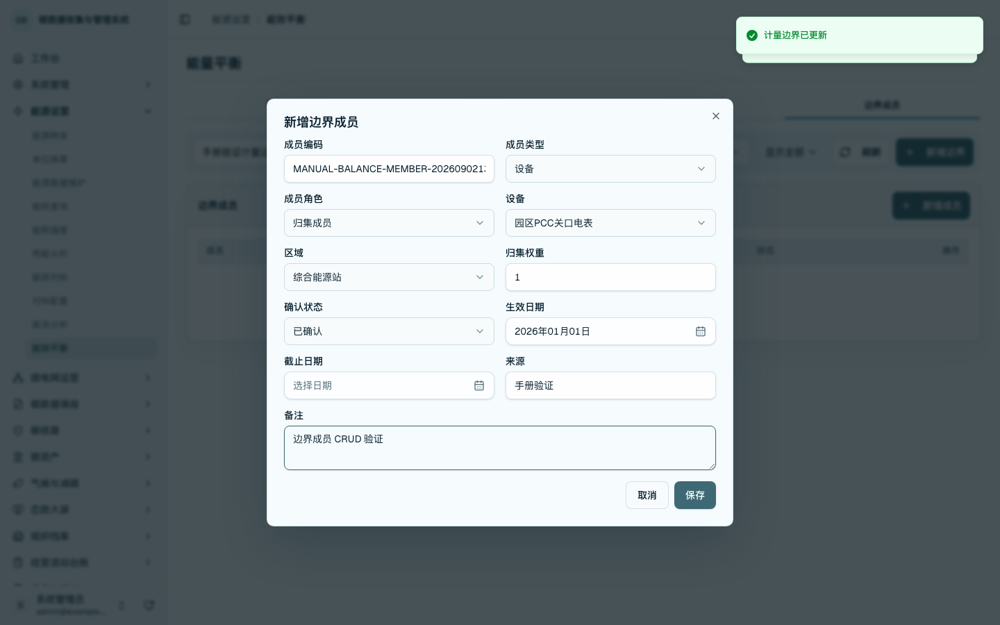
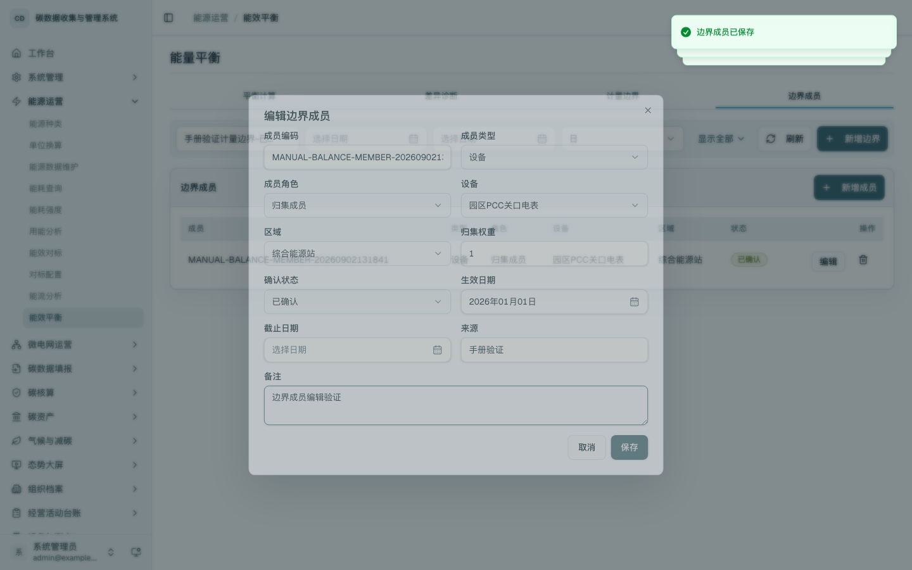
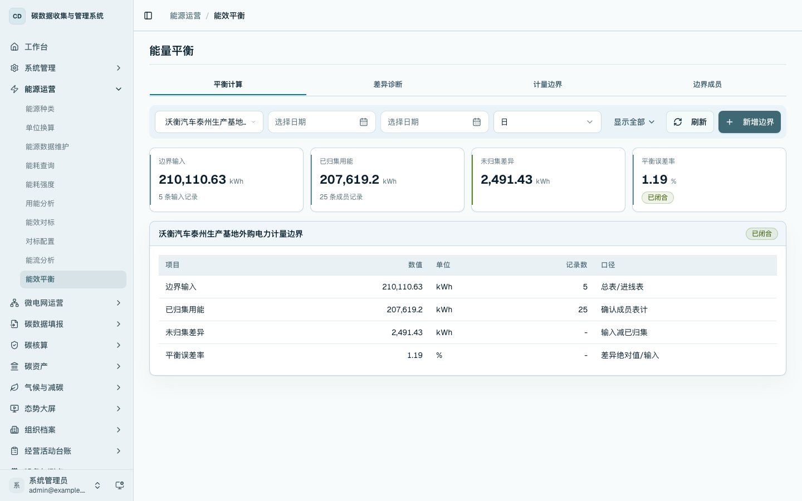
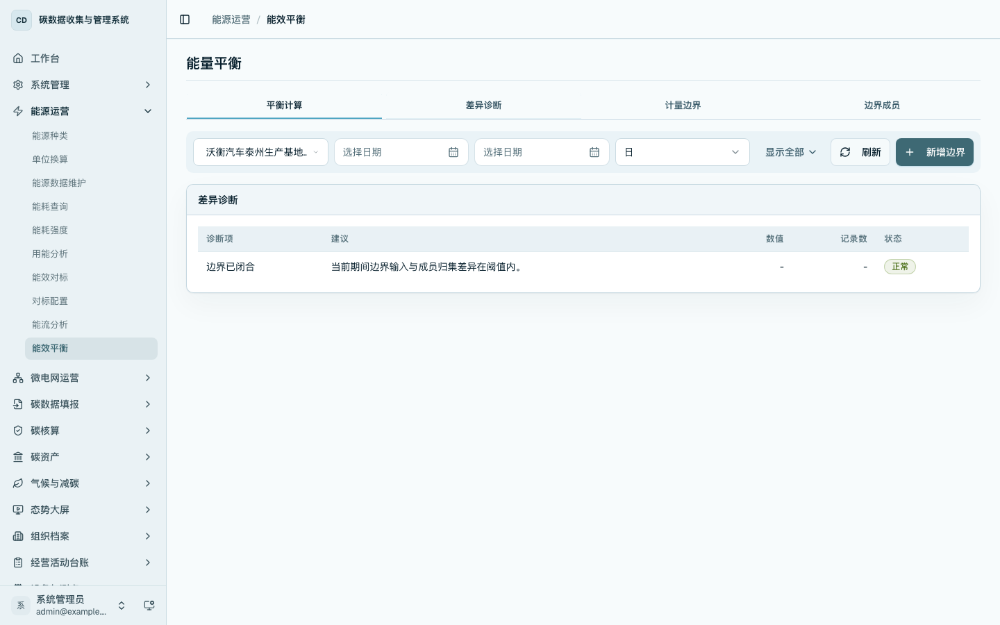
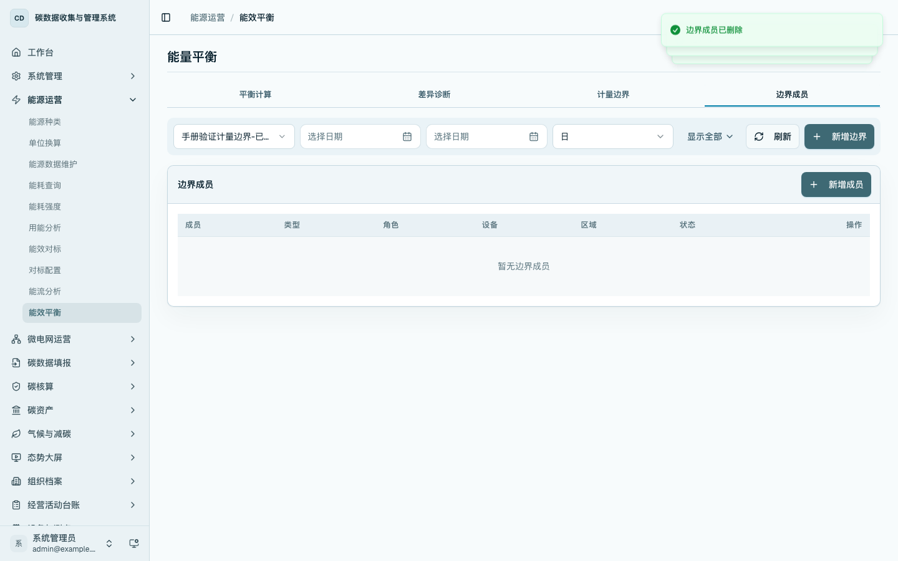
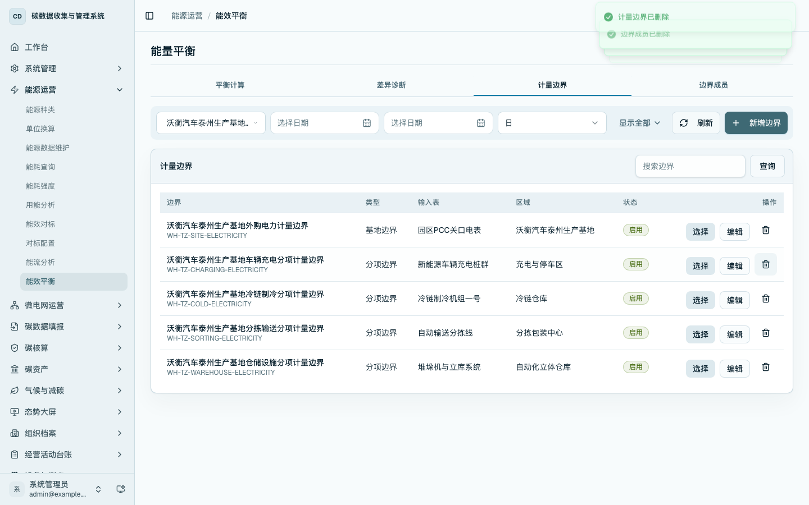

能量平衡
本章说明如何维护计量边界和边界成员，并基于能源事实数据形成能量平衡计算结果。能量平衡用于回答“基地或区域总输入与分项设备、区域归集用能是否闭合”。
菜单位置
- 首页工作台：在
/home的「能源运营」区域点击「能量平衡」进入。 - 侧边栏：进入「能源运营 / 能量平衡」，打开
/energy/balance。
计量边界维护
进入 /energy/balance 后，先在「计量边界」页签维护基地、区域或计量回路的边界定义。边界需要明确边界编码、边界名称、边界类型、输入表、覆盖区域、能源方向、生效日期和状态。


点击「新增边界」后，填写边界编码、边界名称、边界类型、输入表、覆盖区域、能源方向、生效日期、来源和备注。保存后回到计量边界列表，新增边界可按名称检索并作为边界成员和平衡计算的对象使用。

已维护边界可通过行内「编辑」进入表单，修改名称、类型、输入表、覆盖区域、状态和备注等字段。编辑保存后，列表同步回显最新边界名称和配置。

边界成员维护
在「边界成员」页签维护纳入当前边界归集的设备或区域。成员需要明确成员编码、成员类型、成员角色、关联设备或区域、归集权重和确认状态。输入表作为边界属性维护，分表、区域或重点设备作为归集成员维护。

点击「新增成员」后，选择成员类型、成员角色、关联设备、区域、归集权重、来源和备注。保存后成员进入当前边界的归集范围，后续平衡计算会按权重读取成员能源事实。

已维护成员可通过行内「编辑」调整成员编码、成员类型、成员角色、关联设备、区域、权重和备注。保存后列表回显编辑结果。

平衡计算
在「平衡计算」页签选择计量边界、期间、粒度和能源种类。页面展示边界输入、已归集用能、未归集差异和平衡误差率，并列出输入、归集、差异和误差率的计算行。

差异诊断
在「差异诊断」页签查看当前边界的缺项和异常提示。诊断项覆盖未配置输入表、输入事实缺失、成员缺失、成员事实缺失、未绑定边界能源事实和成员重复等情况。

删除与清理
临时维护或录入错误的边界成员可以在未形成历史引用时删除。成员删除后，当前边界成员列表不再显示该成员。

未被能源事实引用的临时计量边界可以删除。已参与历史计算或事实绑定的边界应停用保留，避免破坏历史追溯。

操作要点
- 先维护总表或进线表，再维护分项成员。
- 平衡计算只读取已生成的能源事实数据，不在本页录入能源原始数据。
- 平衡差异用于定位缺少分表、重复归集或期间不一致等问题。
- 已被能源事实引用的边界不直接删除，停用后保留历史追溯。